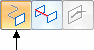
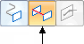
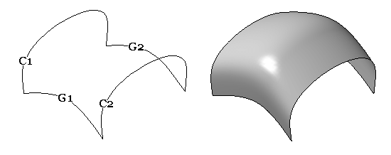
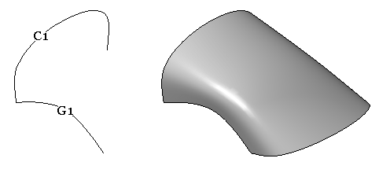

BlueSurf overview
BlueSurf is a surface creation command used to generate complex, but highly editable surfaces. Like loft and sweep, a BlueSurf utilizes cross sections and guide curves, and these parent curves drive the behavior of the resultant surface. Several techniques can be applied to further edit a BlueSurf.
-
New sections and guides can be incorporated, providing additional control over the BlueSurf topology.
-
As sections and guides are added, the number of edit points can be increased or reduced through the concept called Edit Point Data Management.
-
BlueDot edit points can be moved in order to manipulate the surface; both Shape and Local Edits are available.
The first step in creating a BlueSurf is selecting cross sections. The Cross Section Step activates automatically. At least two cross sections are required.

Next, you can select guide curves if needed. Click the Guide Curve Step and select the guide curve(s).

Click Preview and then Finish.
The example below shows the BlueSurf result of two cross sections (C1, C2) and two guide curves (G1, G2).

A BlueSurf may also consist of a single cross section and a single guide curve. The following example shows the BlueSurf result of using cross section (C1) and guide curve (G1) from the previous example.

At this point, editing any of the cross sections or guide curves modifies the shape of the BlueSurf. If you need additional surface shape control, the BlueSurf command provides a step to insert additional sketches.
How do I
Insert sketches into a BlueSurfAdding cross sections into a BlueSurf (ordered modeling)
Construct a BlueSurf feature
Connect sketch elements with a BlueDot
Learn more
End ConditionsCross sections
Look up more details
BlueSurf commandBlueSurf command bar
BlueSurf Options dialog box
BlueDot command (ordered modeling)
BlueDot Edit command bar (ordered modeling)
Hide All BlueDots command (ordered modeling environment)